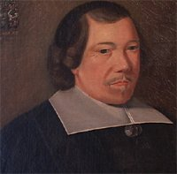
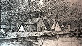
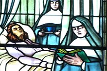
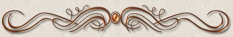
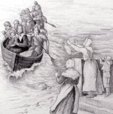
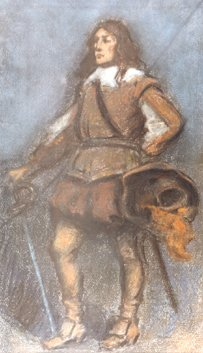
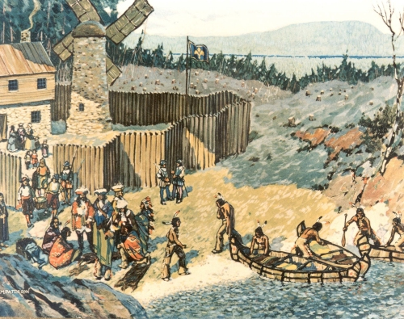

|
MONTREAL, AN IMPORTANT TOWN |
||
|
|
||
|
The first Montrealers, fervent zealots.  The project slowly made its way, but only took shape in 1639 with the creation of the "Société Notre-Dame de Montréal pour la conversion des Sauvages de la Nouvelle-France" (Society of Notre-Dame of Montreal for the conversion of the Savages of New France). Very influential members, such as Jean-Jacques Olier, managed to raise enough money to buy the island of Montreal from Jean de Lauson in 1640. They then hired a leader for their venture, Paul de Chomedey, sieur de Maisonneuve, a devout soldier retired from active service. Shortly afterwards, Jeanne Mance joined them as bursar and nurse, her first intention being to set up a hospital.
 The first winter went well despite the fear of a flood. The threat was so serious that the Sieur de Maisonneuve promised to plant a cross on Mount Royal if they were spared from the waters. Then in the spring more comfortable houses were built for the settlers. Little by little the town grew, and a few Algonquins took refuge inside the palisade. Soon there were more of them than at Sillery. This early success, moreover, stirred the jealousy of the Jesuits, who accused the Montrealers of meddling in diplomatic relations with the Native peoples and complicating the fur trade. It was in the summer of 1643 that the Iroquois became aware of the French presence on the island of Montreal and began a series of ambushes that spread terror in the town. But the Montrealers were brave and did not pack up. They had faith and were determined to carry out their mission whatever the cost.  |
||
|
 |
||
|
The
hired men of the Grande Recrue (Great Recruitment) Because of its location, Montreal was especially vulnerable to Iroquois attacks. So the population lived in constant fear of an attack, and many engagés (indentured men) preferred to go back to France at the end of their thirty-six or sixty months rather than settle for good. According to the Jesuit Paul Ragueneau, in 1651 the town had about 50 inhabitants, and of these only 17 were fit to bear arms. The situation was critical, and Montreal feared for its survival. Seeing no other solution, Jeanne Mance decided to hand the money she had received for building a hospital to the Sieur de Maisonneuve so that he could go to find recruits in France. She revealed to him the identity of her benefactress, Madame de Bullion, who had nevertheless asked to remain anonymous. So Maisonneuve visited the lady, who, moved by his story, offered him an additional sum. The members of the Société de Notre-Dame also contributed, and recruiting began. The losses caused by Iroquois raids had been made up each year by the arrival of five or six men, but this time Maisonneuve wanted many more. In that year of 1653, he hoped to bring back with him no fewer than 200 soldier-settlers.  Among these newcomers were surgeons, joiners, carpenters, gunsmiths, masons, millers, bakers, locksmiths and a coppersmith. There were also an edge-tool maker, a hatter, a nail maker, a roofer, a navvy and a shoemaker, as well as a clog maker, a tailor and a gardener. These hired men of the Grande Recrue were a considerable addition, since thanks to them the population of Montreal doubled at a stroke. These men came to ply their trades, but also undertook to defend the town in case of attack. As soon as they arrived, they were given a land grant and a bonus to encourage them to stay. It must be said, though, that a lull in Iroquois attacks made their settling in much easier. So the Grande Recrue ensured the survival of Montreal. Families came to settle there and clear land, and little by little the town took off, but it would not feel safe from Iroquois attacks or know peace until the arrival of the Carignan-Salières regiment in 1665. So the little farming colony took off, but the plan to include the Native peoples did not have the hoped-for success. Although Native people came to stay for a while in Montreal, none settled there for good. In 1663 the Société de Notre-Dame was dissolved, and a new generation took over. The dream of creating, in a remote place, the ideal of the original Christian society was now just an old memory. From then on, faith gave way to economics. |
||
|
The
battle of the Long-Sault  In 1659, under pressure from the Iroquois, the Algonquins did not come to the annual fair at Ville-Marie, which caused a shortage of furs and a lack of funds in the little colony. Adam Dollard des Ormeaux, a young man well liked by his superiors and fellow citizens and commander of the garrison, decided to remedy the situation by setting a trap for the Iroquois. He wanted to lie in ambush at the foot of the Long Sault on the Ottawa River and surprise those coming back from hunting in the Great Lakes with a load of pelts. His plan was to kill them and then seize their furs. Governor Chomedey de Maisonneuve approved the plan. So on April 19, 1660, Dollard des Ormeaux took command of an expedition of 17 men, joined by some forty Hurons and six Algonquins. The party travelled by night to the Long-Sault. On May 1 it settled into a fort abandoned by the Algonquins. The very next day, two canoes carrying 15 Iroquois appeared. At once the men took aim and fired. Thirteen men were killed, but two managed to escape.
Even though the French and their allies had not foreseen such an encounter, they managed to mount an attack and caused many casualties. Some Hurons even cut off the head of an enemy chief and set it up as a trophy on the palisade, which enraged the Iroquois, who hurried off to get help from the 500 Agniers (Mohawks) with whom they had planned to meet in the islands of the Richelieu to attack the colony. The Iroquois reinforcements took seven days
to arrive. Meanwhile, the French could not set foot
outside the fort without being shot at, and soon they were
very weak, for water and food were running out. When
the 500 warriors arrived from the Richelieu, the fight was already lost for
Dollard and his companions.
The obstacles the Iroquois met on their way prevented the invasion of New France. Dollard des Ormeaux and his companions had thus temporarily turned the Iroquois army away from its goal. So their death was not in vain. All the more so since these events allowed Radisson and Des Groseillers to reach Montreal with a cargo of furs valued at 200,000 livres, and a group of Outaouais (Ottawa) to come and trade their beaver in Montreal. But the Iroquois did not stop there. They were persistent and, in the autumn of 1660, raised an army of 600 men, firmly resolved to wipe out New France. On the way, the leader of the expedition was killed in an unfortunate accident. Taking it as a bad omen, the party broke up. In 1661, however, the Iroquois came back to spread terror, killing more than 100 French settlers. It would take the Carignan regiment to bring some measure of peace. |
||
| Highlights of
Montreal's early years
The year 1663 marked the end of the first period of Montreal's settlement. The Société Notre-Dame, no longer able to keep the colony supplied or to pay the soldiers and engagés, handed over the seigneury of the island of Montreal to the Seminary of Saint-Sulpice in Paris.
The
Sulpicians governed
their seigneury. The
ideals of the mission in the wilderness gave way to the realities of
daily life, with farming and the fur trade as the main
economic activities.  Absolutely all economic life revolved around the fur trade. And to carry on this trade, you had to go ever farther into the continent, into the Pays d'en Haut (Upper Country), that is, all the territories west of Montreal that could be reached by waterways. In 1689 the first intercolonial war began. Furs no longer sold and piled up in the warehouses of La Rochelle, where they would rot. France wanted to close the western posts, but the Iroquois, allies of the English, were still at war, and France had to occupy the territory so that it would not fall into English hands. In 1701 the governor of Montreal, Callière, negotiated the Great Peace with 33 Native nations, including the Iroquois, so that the French could sell their furs through the English, who had access to Northern Europe. After the Treaty of Utrecht in 1713, the fur trade picked up again more strongly than ever. While everyone was looking westward for Asia and its spices, the Spanish reached tropical America and its precious metals. The French, English and Dutch, who sailed farther north, fell back on "hairy gold", in other words fur, and in mockery a French outpost set up around 1667 on the shores of Lac Saint-Louis was named Lachine ("China"). The historian Faillon wrote: " it was a place more favourable than any other for settlers who wished to trade with the savages; and at bottom it was less farming than this kind of trade that drew most of them ". Clever, daring and determined to make their fortune with "pelts", many Canadiens set off on adventures. Despite the risks of the journey, the profits and the feeling of freedom the fur trade brought were so great that in 1670 the authorities, fearing the seigneuries would empty out in favour of the Pays d'en Haut, tried to crack down by forbidding unmarried men to become coureurs des bois (woods runners). A "congé", or permit, was also needed to trade in furs. These permits were issued by the civil and religious authorities, and gave rise to a great deal of favouritism. So many tried their hand at trading without a permit, and had to pay fines if they were caught. |
||
Major events
from 1643 to 1685
|
||
 In 1641 they finally set sail, their heads
full of the wildest dreams. No one really knew
the geography or where the island was, and yet everyone was
certain that faith could overcome every obstacle. The project
resembled that of the Jesuits, since it consisted of converting and
settling the " Savages " so as to unite them with the French
in the Christian religion. Chomedey de Maisonneuve
officially took possession of Montreal on October 15. The season being
too far advanced to settle there, he resolved to spend the winter in Quebec,
where people urged him to settle on Île d'Orléans instead,
explaining that Montreal was far too exposed to the Iroquois, but
nothing would change his mind.
In 1641 they finally set sail, their heads
full of the wildest dreams. No one really knew
the geography or where the island was, and yet everyone was
certain that faith could overcome every obstacle. The project
resembled that of the Jesuits, since it consisted of converting and
settling the " Savages " so as to unite them with the French
in the Christian religion. Chomedey de Maisonneuve
officially took possession of Montreal on October 15. The season being
too far advanced to settle there, he resolved to spend the winter in Quebec,
where people urged him to settle on Île d'Orléans instead,
explaining that Montreal was far too exposed to the Iroquois, but
nothing would change his mind. Dollard des Ormeaux's recruits
stayed put, expecting a few scattered bands
of Iroquois to turn up. So it was quite a surprise when they saw
an army of about 200 Iroquois arrive, come to drive
the French off the island of Montreal for good. Without delay, Dollard's
group took refuge inside the fort, and shooting broke out on
both sides.
Dollard des Ormeaux's recruits
stayed put, expecting a few scattered bands
of Iroquois to turn up. So it was quite a surprise when they saw
an army of about 200 Iroquois arrive, come to drive
the French off the island of Montreal for good. Without delay, Dollard's
group took refuge inside the fort, and shooting broke out on
both sides. In a panic, the French took apart two
pistol barrels to use as grenades. When that
did not work, they thought of using a keg of powder, but when
they threw it over the palisade, it hit a branch and
fell back inside the fort. The resulting explosion was
catastrophic. The Iroquois took advantage of the situation to move in
and fire through the loopholes at anything that moved inside
the fort. When the
Iroquois got into the fort, they found only nine survivors,
five Frenchmen and four Hurons.
In a panic, the French took apart two
pistol barrels to use as grenades. When that
did not work, they thought of using a keg of powder, but when
they threw it over the palisade, it hit a branch and
fell back inside the fort. The resulting explosion was
catastrophic. The Iroquois took advantage of the situation to move in
and fire through the loopholes at anything that moved inside
the fort. When the
Iroquois got into the fort, they found only nine survivors,
five Frenchmen and four Hurons.